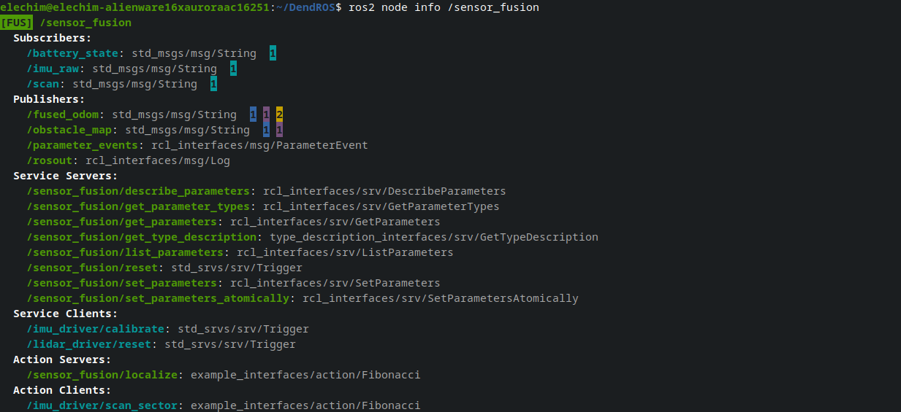

ros2 node info Colorization
When you run ros2 node info /node_name, DendROS automatically colorizes the output using the same group colors configured for ros2 launch. No extra setup is required — colors are read from the same cache file the pipe writes during launch.
What it looks like

What gets colored
Node name
The first line (the node name) is colored with the group color and badge — the same way it appears in ros2 launch output.
Section headers
All section headers (Subscribers:, Publishers:, Service Servers:, …) are rendered bold, regardless of whether a config is loaded.
Type annotations
The message or service type on each entry (: sensor_msgs/msg/LaserScan or [sensor_msgs/msg/LaserScan]) is dimmed on every line. (None) entries are also dimmed and receive no color.
Output sections
Entries in Publishers, Service Servers, and Action Servers are colored with the node's own group color — these are things the node provides to others.
Input sections
Entries in Subscribers, Service Clients, and Action Clients are colored with the provider's color — the color of whichever node publishes, serves, or handles that item:
| Section | Colored with |
|---|---|
| Subscribers | Primary publisher's group color |
| Service Clients | Service server node's group color |
| Action Clients | Action server node's group color |
Group indicators on topics
For Publishers and Subscribers, DendROS queries the live ROS 2 graph and shows small inverted-color count indicators at the end of each entry — one per distinct group with connected endpoints:
- Publishers: indicators show how many subscribers are connected per group.
- Subscribers: indicators show how many publishers are connected per group.
The number inside each colored block is the count of nodes from that group connected to the topic. This gives you an immediate visual overview of who is listening to or publishing each topic.
For Service Clients and Action Clients with more than one matching server, extra server nodes are shown as trailing colored ■ squares after the type annotation.
Color and tag sources
DendROS uses the same two-stage lookup as ros2 node list:
- Primary —
~/.config/dendROS/node_colors.yaml(written automatically during anyros2 launchorros2 run). - Fallback — scans
AMENT_PREFIX_PATHfor installeddendROS.yamlconfigs.
If no config is found, section headers are still bolded and types dimmed, but no group colors are applied.
Notes
- Both
name: type(older ROS 2) andname [type](newer ROS 2) entry formats are handled automatically. - Graph queries use a single rclpy session for all input sections (topics, services, and actions) to minimize overhead and avoid DDS discovery races.
- When
rclpyis unavailable, services and actions fall back to a name heuristic (/server_name/service→server_name); topics fall back toros2 topic info --verbosesubprocesses.